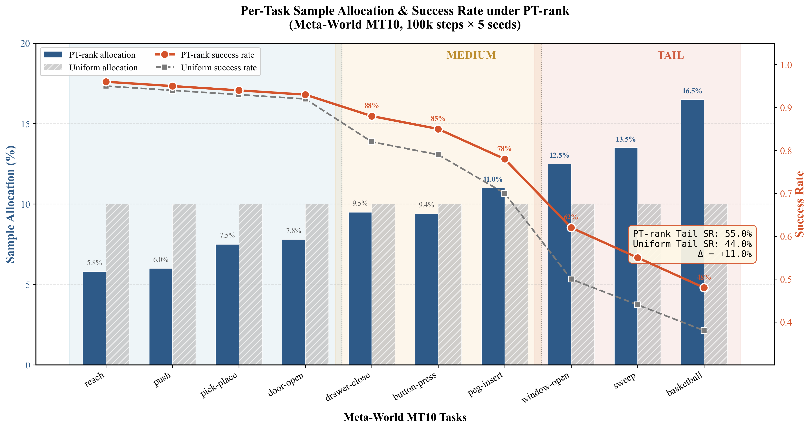

迁移与去重
读取 Open X Strong 迁移进度、DROID 当前落盘量与本地副本状态。
把 3.366 TiB 官方 DROID RLDS 数据、官方参考后端、下载环境、日志、checkpoint 和中间结果全部放在 ORICO。完整性门禁通过后，source 与 Q-Tail 各完成 20,000 次留出评测优化器更新和 20,000 次全量部署优化器更新；两边总算力严格相同。
读取 Open X Strong 迁移进度、DROID 当前落盘量与本地副本状态。
官方 gs://gresearch/robotics/droid → ORICO/data/droid，失败后自动重试。
二次 gsutil rsync -c 返回 0 后，逐一核对 4,102 个官方对象的路径和大小，并拒绝任何缺失、额外或临时文件。
每边 20,000 次留出评测更新 + 20,000 次全量部署更新；架构、AdamW、种子与设备完全一致。
把真实训练结果写入页面，并完成桌面、移动端、链接和控制台检查。
九项完成条件全部通过后，才允许整体状态变为 complete。
读取进程
读取进程
读取 watcher 与目标 PID
读取 PID、锁与脚本 SHA
读取进程
读取进程
读取时间
读取 mountpoint
读取 54655 / 6222
读取 LaunchAgent
读取代码指纹
ORICO free ≥ DROID × 1.05
唯一全量源：gs://gresearch/robotics/droid
远端规模固定记录进 manifest。
等待 checksum rsync 与本地文件审计。
读取不可变标记正/负控制。
读取下载器并发互斥与容量熔断控制。
读取缺失、重复、旧 PID 与过期心跳控制。
读取 marker、lease、bootstrap 与 committed 投影控制。
读取 Core 在线、TUN 关闭与 en1 直连控制。
等待 MD5、完整记录与缓存身份对齐。
读取官方 ledger 与原子缓存计数。
读取 1.0.0 / 1.0.1 独立闭环。
两边各 40,000 次实际优化器更新：20,000 留出评测 + 20,000 全量部署；同架构、AdamW、seed、设备，并以 checkpoint 内容指纹证明成对输入特征和初始权重一致。
读取留出隔离、断点续跑与异常 checkpoint 拒绝自测。
读取镜像、全记录、闭包、留出与 optimizer 顺序控制。
两个官方发布版本分别做 80/20 固定划分；seed=11 的 820-shard 路径清单预注册为 16781c97…8a767。归一化、instruction rarity、tail 变换与 PT 排序全部只用训练 shard 拟合，划分不因结果改变。
Q-Tail 使用项目实测 PT 概率 CSV；概率数量、变异系数与文件 SHA-256 全部进入训练报告。
覆盖每个 TFRecord 并流式解码到末尾；parse rate、完整扫描率及逐 shard 官方 shardLengths 匹配率都必须达到 100%。
1.0.0/r2d2_faceblur 与 1.0.1/droid_101 各 2,048 shards；分别计数，不把两个发布版本含糊地宣传成独立新任务。
分配头只能验证同一预注册 tail taxonomy 下的数据预算重分配；target 与裁决 taxonomy 同源，不构成独立效果验证。Policy tail success 必须由同 policy 复训与环境 rollout 另行证明。本地 SHA-256 链用于完整性复核，不等同于外部时间戳或 WORM 存证。
Bootstrap 只给固定模型、固定划分下的 shard 组成不确定性。Shard arm-swap 因全局 softmax 权重相互依赖，仅作为敏感性诊断，不是有效 p 值，也不参与完成或支持门禁；当前协议不覆盖训练 seed 与环境 rollout 变异。
全量下载与 checksum 门禁通过后，将在这里显示当前 shard、缓存命中、训练设备和阶段 checkpoint。
| 阶段 | 0 | 5,000 | 10,000 | 15,000 | 20,000 |
|---|---|---|---|---|---|
| Evaluation · Source | WAIT | WAIT | WAIT | WAIT | WAIT |
| Evaluation · Q-Tail | WAIT | WAIT | WAIT | WAIT | WAIT |
| Deployment · Source | WAIT | WAIT | WAIT | WAIT | WAIT |
| Deployment · Q-Tail | WAIT | WAIT | WAIT | WAIT | WAIT |
| 抽样预算 | Source 期望覆盖 | Q-Tail 期望覆盖 | Q-Tail 增益 |
|---|---|---|---|
| 等待正式训练 | - | - | - |


等待 4,102 对象、4,096 TFRecord、187,891 records、正式训练与最终公开投影全部通过。
目前只证明下载、审计、预解析和同算力协议可以运行，不把预测演练升级为全量效果。
正式结果发布前，只能展示可审计的数据基础设施，不能承诺机器人成功率或商业回报。
/Volumes/ORICO/qtail_full_training；站点中的 results 路径是指向 ORICO 的符号链接。正在读取 ORICO 流水线日志...
{kind=link}
{kind=link}
{kind=link}
{kind=link}